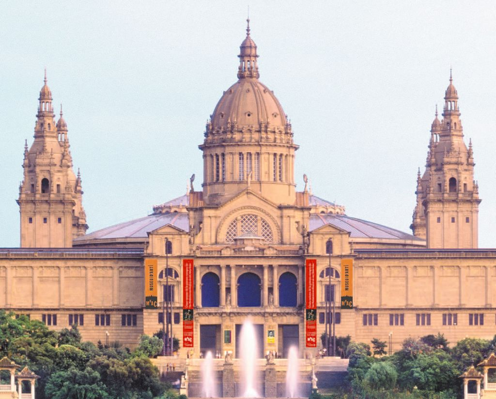

Some city-run museums (including the Museu Picasso, MUHBA) are free on Sunday afternoons, from 3pm to 8pm.

Others are also free on one given day of the month, often the first Wednesday or Sunday.
If you’re here late September don’t miss the five-day Festes de la Mercè, which brings the city to life with free concerts, dancing, fireworks, acrobatic feats and lively correfocs (colourful parades of drums, devils and firecrackers). Or try the summer extravaganza Festa Major de Gràcia, best known for its competition of decorated streets, but with a packed program of free outdoor concerts.
It’s unashamedly touristy, but ambling along this 1km-long walkway is arguably the quintessential Barcelona experience.
 Lined with regal historical buildings, La Rambla is a great place to stroll, particularly if you time it right – early morning is best.
Lined with regal historical buildings, La Rambla is a great place to stroll, particularly if you time it right – early morning is best.
This famous indoor market hall is a colourful explosion of fruit, vegetables, seafood, rows and rows of cured jamón and some mind-boggling butchers’ displays. There are tapas bars, pizza stalls and all manner of produce you can try before you buy.
While many of Barcelona’s architectural gems have admission fees to see the interiors, the arguably more impressive facades can be seen for free.
 The mind-blowing workmanship of Gaudí’s magnum opus, the cathedral-like La Sagrada Família,
The mind-blowing workmanship of Gaudí’s magnum opus, the cathedral-like La Sagrada Família,
for example, or the three stunning examples of Modernisme that sit side-by-side on the Passeig de Gràcia –
the Casa Lleó Morera, the Casa Amatller and Gaudí’s Casa Batlló.
Barcelona has some wonderful beaches perfect for resting aching feet after days of sightseeing.
 Barceloneta is the most popular, with its lovely sweep of golden sand and promenade backed with restaurants.
Barceloneta is the most popular, with its lovely sweep of golden sand and promenade backed with restaurants.
For something less crowded, walk further north towards the Fòrum area.
The definitive collection of Barcelona’s favourite homegrown artist atFundació Joan Miró is worth forking out for, but there are fantastic Miró sculptures around the city for free viewing. Parc de Joan Miró is home to his epic 22m-tall Woman and Bird sculpture covered in primary coloured glazed tiles and rising dramatically from a sparkling pool. There’s also a Miró mosaic in the central walkway of La Rambla and another displayed unexpectedly on the outside wall of Terminal 2 at the airport.
One of Barcelona’s newer attractions is the Born Centre Cultural, a dazzlingly converted former market building that has as its centrepiece remains of some
of the hundreds of buildings razed to the ground by the forces of Philip V after the siege of 1714.
 For most Catalans the event marks the starting point of the desire for separation.
For most Catalans the event marks the starting point of the desire for separation.
It’s an emotionally charged place.
In the heart of Barri Gòtic, the colossal neo-Gothic La Catedral is as impressive outside as it is within. Free entry in the morning and late afternoon makes it worth venturing inside to take in its soaring domed ceilings, pillars and cloister with courtyard of palms, orange trees and resident gaggle of white geese.
Get lost in a warren of cobblestone alleyways lined with bars and quirky shops and dotted with quiet little plaças,
 in the atmospheric medieval quarter of Barri Gòtic. Eventually you’ll almost certainly surface on La Rambla,
in the atmospheric medieval quarter of Barri Gòtic. Eventually you’ll almost certainly surface on La Rambla,
or the Via Laietana, which flanks the area on the other side.
Built for Barcelona’s 1929 World Exposition, this water-, sound- and lightshow has been drawing tourists ever since.
 Sure, the Magic Fountain borders on the kitsch side – but what’s not to love about jets of multicoloured
Sure, the Magic Fountain borders on the kitsch side – but what’s not to love about jets of multicoloured
water rising in sync to cheesy 1980s numbers and show-tunes?